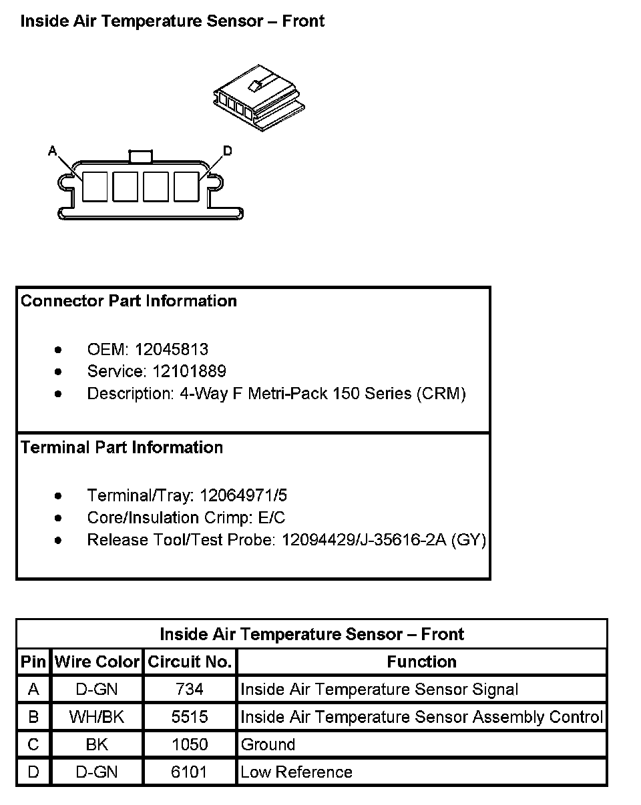
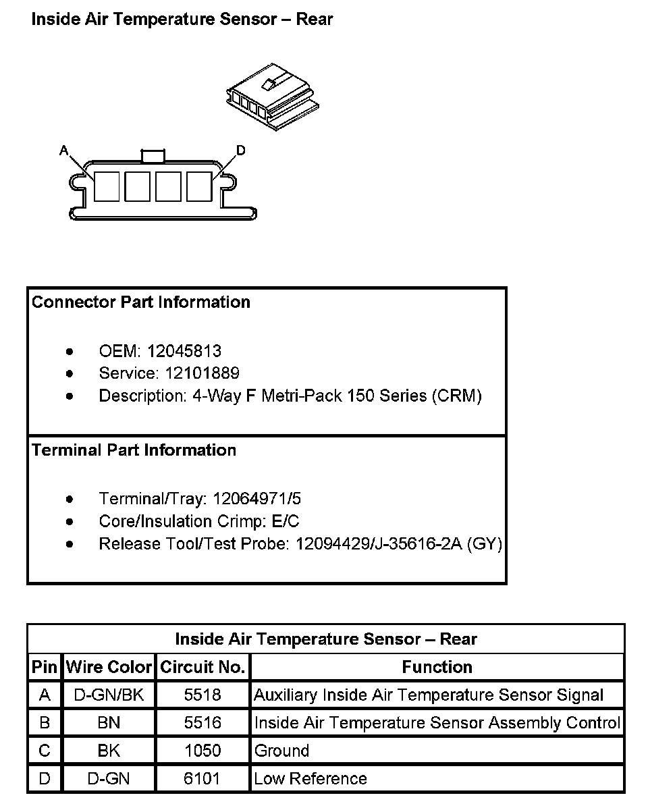

Operation CHARM
: Car repair manuals for everyone.
Home
>>
Cadillac
>>
2007
>>
Escalade ESV AWD V8-6.2L
>>
Repair and Diagnosis
>>
Heating and Air Conditioning
>>
Sensors and Switches - HVAC
>>
Cabin Temperature Sensor / Switch
>>
Diagrams
Cabin Temperature Sensor / Switch: Diagrams
Inside Air Temperature Sensor - Front:

Inside Air Temperature Sensor - Rear:
